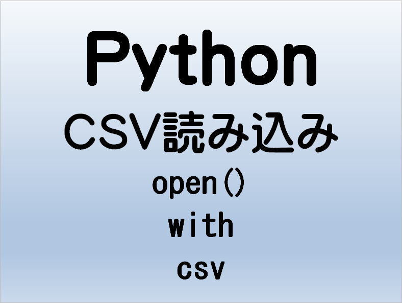

第21回.CSV読み込みとopen()関数とwith文

Pythonの標準ライブラリのcsvを使いCSVファイルを読み込みます。
ファイルをオープンするにはopen()関数を使いますが、このときwith文を使うととても便利です。
目次
open()関数
または、ラップするファイルの整数のファイルディスクリプタです。
指定可能なモードは次の表の通りです。
| 文字 | 意味 |
| 'r' | 読み込み用に開く (デフォルト) |
| 'w' | 書き込み用に開き、まずファイルを切り詰める |
| 'x' | 排他的な生成に開き、ファイルが存在する場合は失敗する |
| 'a' | 書き込み用に開き、ファイルが存在する場合は末尾に追記する |
| 'b' | バイナリモード |
| 't' | テキストモード (デフォルト) |
| '+' | open for updating (reading and writing) |
このオプションはテキストモードでのみ使用してください。
| Codec | 別名 |
| shift_jis | csshiftjis, shiftjis, sjis, s_jis |
| shift_jis_2004 | shiftjis2004, sjis_2004, sjis2004 |
| shift_jisx0213 | shiftjisx0213, sjisx0213, s_jisx0213 |
| utf_32 | U32, utf32 |
| utf_32_be | UTF-32BE |
| utf_32_le | UTF-32LE |
| utf_16 | U16, utf16 |
| utf_16_be | UTF-16BE |
| utf_16_le | UTF-16LE |
| utf_7 | U7, unicode-1-1-utf-7 |
| utf_8 | U8, UTF, utf8, cp65001 |
| utf_8_sig | ※UTF-8（BOM付き） |
上記以外は、公式ドキュメント - 標準エンコーディング
open()関数の使用例
Windowsのメモ帳で開いた「file01.csv」です。
UTF-8（BOMなし）です。
f = open("./test/file01.csv", "r", encoding="utf-8")
print(f.read())
f.close()with文
ブロックの前後でコードの初期化と終了処理が実行されます。
基本構文
with expression [as variable]:
with-blockwith-blockの実行が終了後に、ブロックが例外を送出する場合であってもクリーンアップコードが実行できます。
with文の使用例
with open("./test/file01.csv", "r", encoding="utf-8") as f:
print(f.read())
print(f.closed)csvの読み込み
これを使う事で簡単にcsvファイルを扱う事が出来ます。
csvファイルはイテレータ プロトコルをサポートしています。
Windowsのメモ帳で開いた「file01.csv」です。
UTF-8（BOMなし）です。
1行ずつ処理（print）する
import csv
with open("./test/file01.csv", "r", encoding="utf-8") as f:
reader = csv.reader(f)
for row in reader:
print(row)
2次元配列に取り込む
from pprint import pprint
import csv
with open("./test/file01.csv", "r", encoding="utf-8") as f:
reader = csv.reader(f)
row = [r for r in reader]
pprint(row, width=20)
pprint
今回のサンプルデータであれば数値は適当な数値で（30でも40でも）構いません。
tsvの読み込み
Windowsのメモ帳で開いた「file01.txt」です。
ANSI（shift-jis）です。
from pprint import pprint
import csv
with open("./test/file01.txt", "r", encoding="shift-jis") as f:
reader = csv.reader(f, delimiter="\t")
row = [r for r in reader]
pprint(row, width=20)

スペース区切りなら、delimiter=" "と指定します。
同じテーマ「Python入門」の記事
第16回.Pythonの引数は参照渡しだが・・・
第17回.リスト内包表記
第18回.例外処理（try文）とexception一覧
第19回.import文（パッケージ・モジュールのインポート）
第20回.フォルダとファイルの一覧を取得（os,glob,pathlib）
第21回.CSV読み込みとopen()関数とwith文
第22回.CSV読み書き（csvモジュール）
第23回.pipコマンド（外部ライブラリのインストール）
第24回.エクセルを操作する（openpyxl）
第24回.エクセルを操作する（pywin32:win32com）
第26回.WEBスクレイピング（selenium）
新着記事NEW ・・・新着記事一覧を見る
VBA100本ノック 100本目：WEBから100本ノックのリストを取得｜VBA練習問題（3月3日）
VBA100本ノック 99本目：自動席替え（行列と前後左右が全て違うように）｜VBA練習問題（3月2日）
VBA100本ノック 98本目：席替えルールが守られているか確認｜VBA練習問題（3月1日）
VBA100本ノック 97本目：Accessデータを取得（グループ集計）｜VBA練習問題（2月27日）
VBA100本ノック 96本目：Accessデータを取得（マスタ結合&抽出）｜VBA練習問題（2月26日）
VBA100本ノック 95本目：図形のテキストを検索するフォーム作成｜VBA練習問題（2月24日）
VBA100本ノック 94本目：表範囲からHTMLのtableタグを作成｜VBA練習問題（2月23日）
VBA100本ノック 93本目：複数ブックを連結して再分割｜VBA練習問題（2月22日）
VBA100本ノック 92本目：セルの色を16進で返す関数｜VBA練習問題（2月20日）
VBA100本ノック 91本目：時間計算（残業時間の月間合計）｜VBA練習問題（2月19日）
アクセスランキング ・・・ ランキング一覧を見る
1.最終行の取得（End,Rows.Count）｜VBA入門
2.RangeとCellsの使い方｜VBA入門
3.変数宣言のDimとデータ型｜VBA入門
4.マクロって何？VBAって何？｜VBA入門
5.Range以外の指定方法（Cells,Rows,Columns）｜VBA入門
6.セルのコピー&値の貼り付け（PasteSpecial）｜VBA入門
7.繰り返し処理（For Next)｜VBA入門
8.セルに文字を入れるとは（Range,Value）｜VBA入門
9.マクロはどこに書くの（VBEの起動）｜VBA入門
10.とにかく書いてみよう（Sub,End Sub）｜VBA入門
このサイトがお役に立ちましたら「シェア」「Bookmark」をお願いいたします。
記述には細心の注意をしたつもりですが、
間違いやご指摘がありましたら、「お問い合わせ」からお知らせいただけると幸いです。
掲載のVBAコードは動作を保証するものではなく、あくまでVBA学習のサンプルとして掲載しています。
掲載のVBAコードは自己責任でご使用ください。万一データ破損等の損害が発生しても責任は負いません。